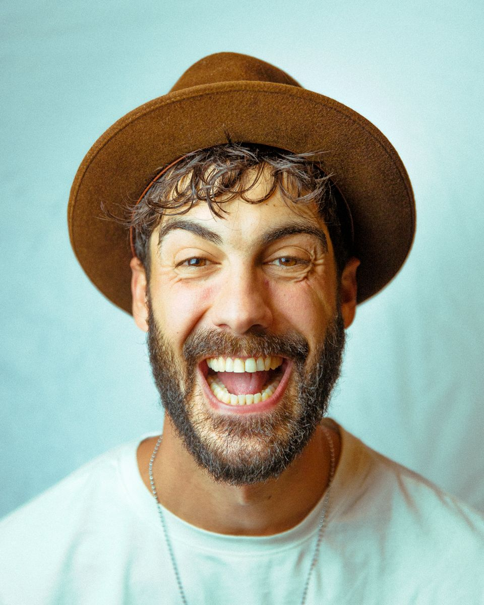

I'm Carlos Flores — filmmaker, musician, and life coach based in Amsterdam. For years I've been exploring the intersection of creativity, spirituality, and personal transformation.
My journey started behind the camera, telling stories through film and photography across Europe. Over time, that creative path led me deeper — into music, consciousness, and ultimately coaching.
Through Escuela Psicodélica, I share everything I've learned: how to unlock your creative potential, face your shadows, and step into the fullest version of yourself.
Whether it's through a coaching session, a film, or a song — my mission is to inspire transformation.
I create content about consciousness, creativity, filmmaking, music, and personal growth. New videos every week.
Visit Channel